Carpet Cleaning
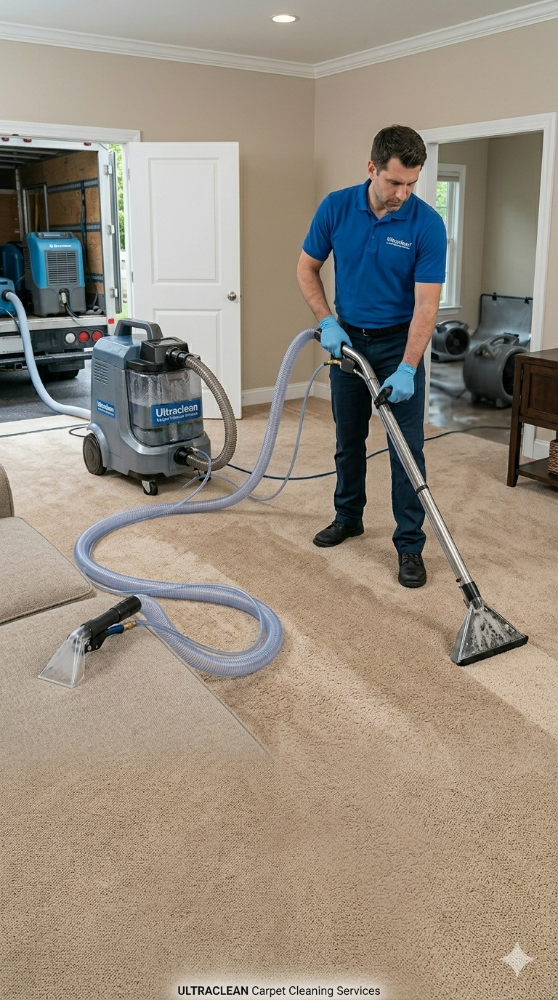
Urban Shine delivers professional carpet steam cleaning in Perth. Hot water extraction, stain & odour removal, 14-day guarantee & free Urban Shield™ sanitisation.
Couch Cleaning
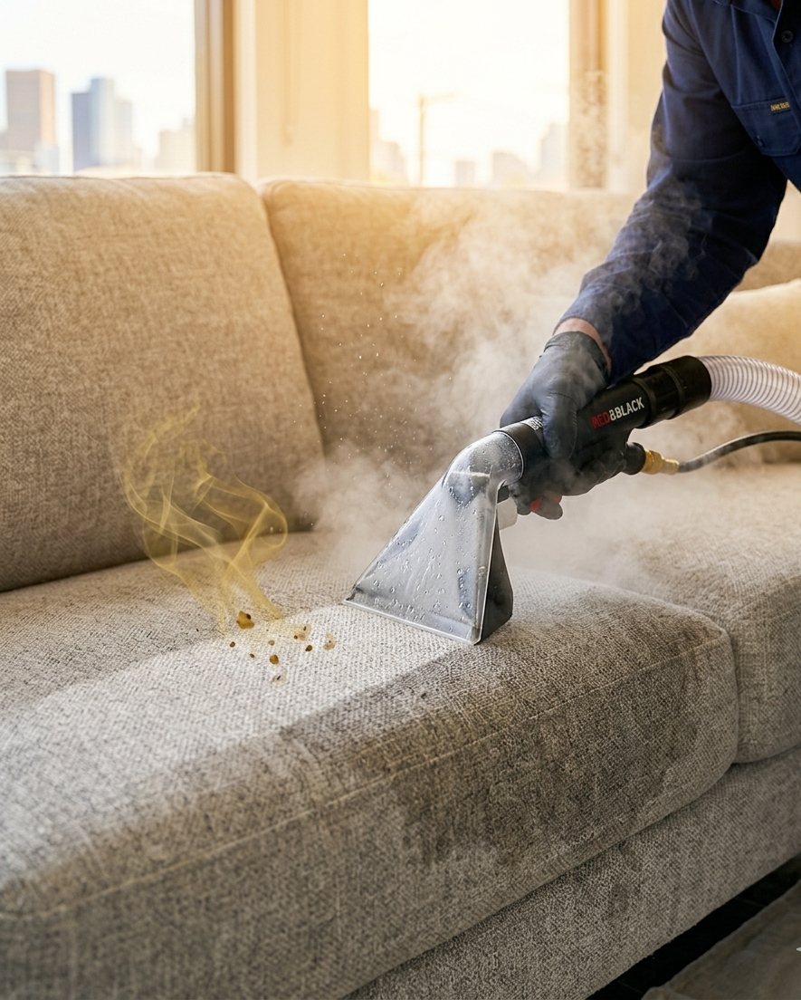
Specialist couch and lounge steam cleaning in Perth. Fabric and leather upholstery care, stain removal, odour neutralisation and free Urban Shield™ protection.
Curtain Cleaning
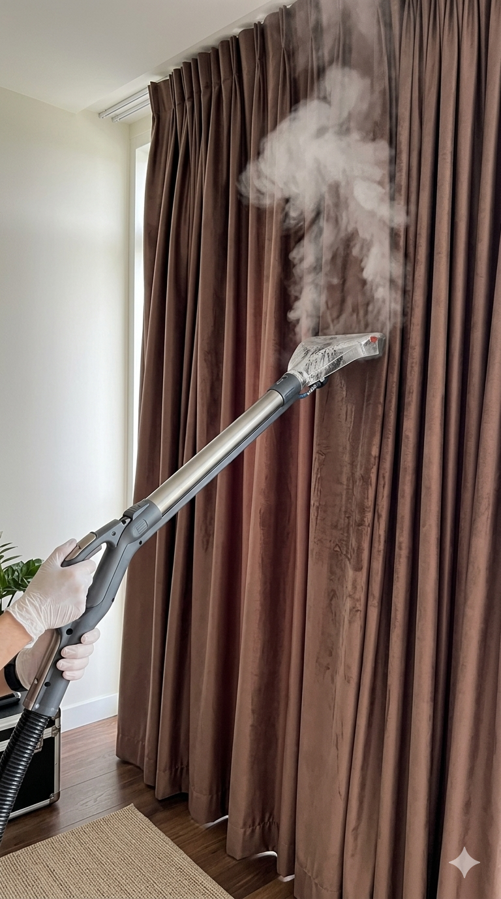
Professional curtain cleaning on-site in Perth. No need to take curtains down. Gentle steam extraction for sheers, drapes, and blockouts.
Mattress Cleaning
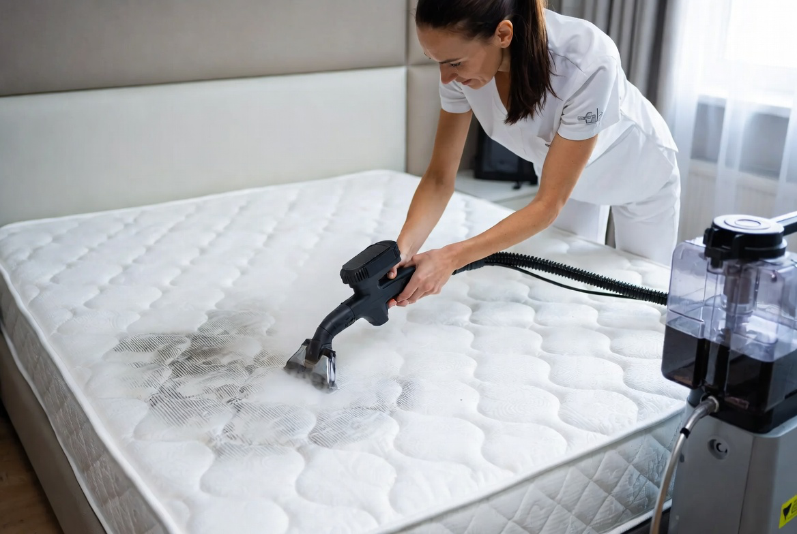
Deep mattress cleaning and hospital-grade sanitisation in Perth. Eradicates dust mites, sweat stains, and bacteria for a hygienic sleep sanctuary.
Floor Refresh
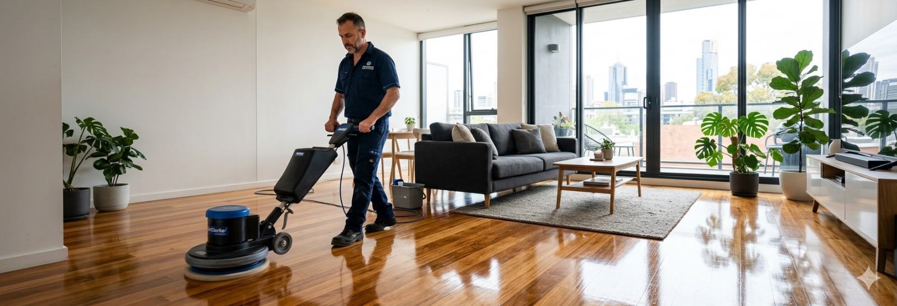
Professional timber floor polishing and refresh in Perth. Revive dull wood and polished concrete surfaces without the expense of full sanding.
Decking
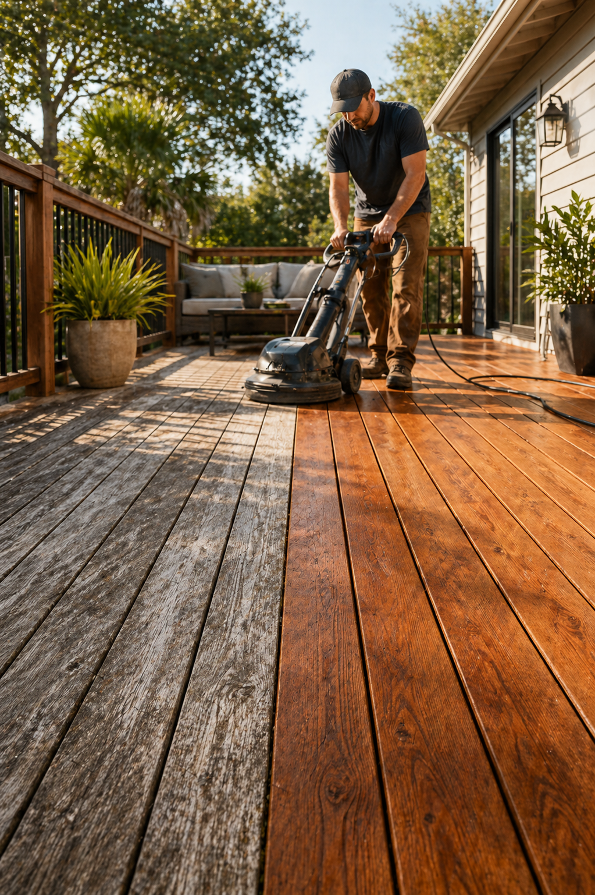
Complete decking restoration in Perth. Weatherproofing, sanding, staining, and premium oil application to protect outdoor timber from harsh WA sun.
Aircon Cleaning
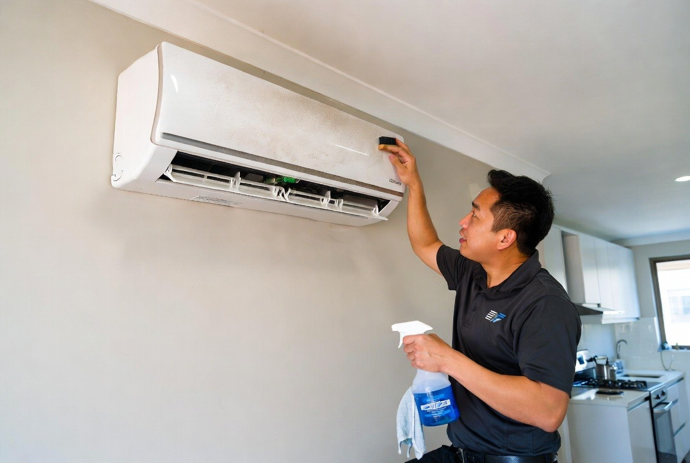
Perth air conditioner hydro-cleaning and mould spore decontamination. Improves airflow, lowers electricity bills, and eradicates hidden indoor allergens.
Steam Cleaning
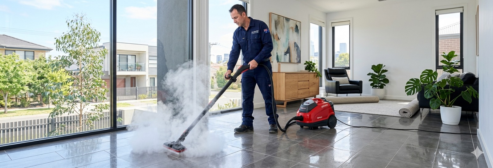
Superheated steam cleaning across Perth homes and businesses. Sanitise hard floors, kitchens, bathrooms, and high-touch areas without harsh chemicals.
Flood Treatment
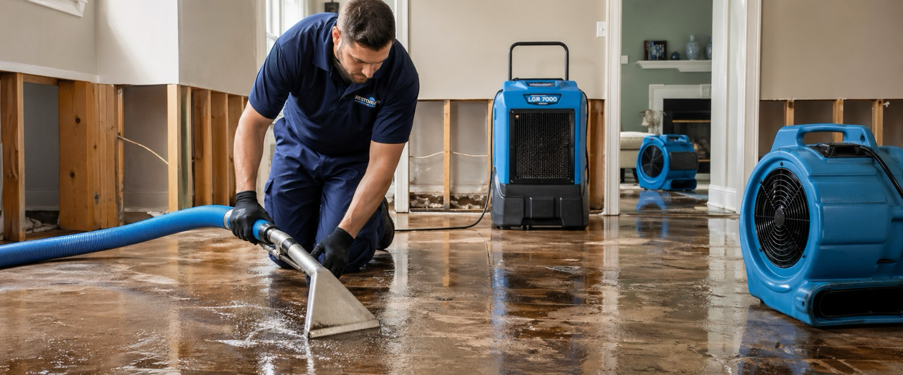
24/7 emergency water extraction and structural drying in Perth. Prevent black mould, restore wet carpets and timber floors with rapid response.
Light Sanding
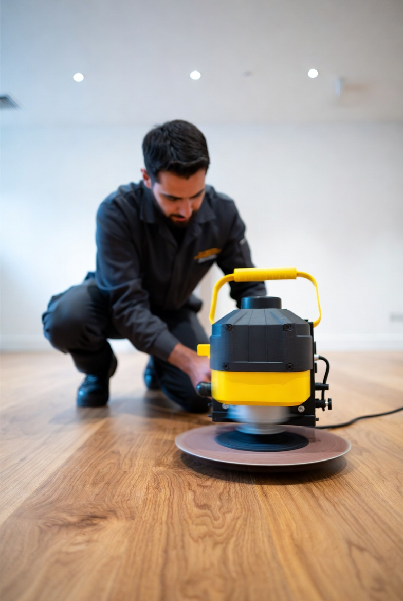
Perth's premier dust-free timber floor sanding service. Strips old yellowed varnish, scratches, and stains with 99% HEPA dust extraction.
Floor Restore
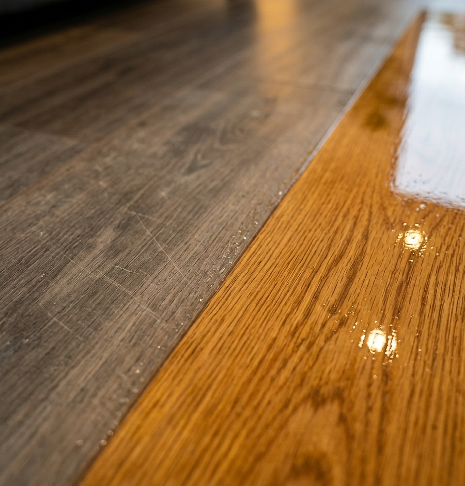
Comprehensive timber floor restoration in Perth. Repair damaged floorboards, gouges, water marks, and historic timber with master craftsmanship.
Tile & Grout
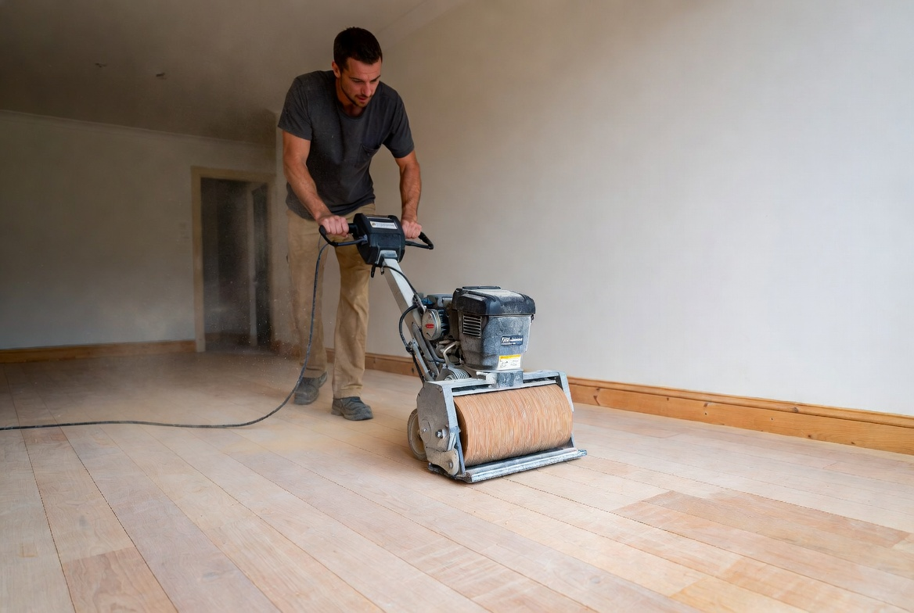
Restore gleaming tiles and spotless grout lines across Perth. High-pressure rotary extraction lifts embedded dirt and grease from ceramic, porcelain, and stone.
Our Core Operating Values
Every service we deliver is anchored in our four non-negotiable commitments to Western Australian property owners.
A Can-Do Attitude
Our team takes a positive and problem-solving approach to every job, committed to achieving the cleanest possible outcome regardless of initial staining or wear.
Keeping It Authentic
Empathetic, respectful, and upfront with transparent pricing. We inspect and test fibers accurately before making commitments.
Customer-First
We work around your schedule, provide fast drying techniques to minimize home downtime, and treat your furnishings with genuine care.
Focus On Quality
Hospital-grade sanitisation, continuous dust-extraction technology, and our unconditional 14-day free re-treatment guarantee.